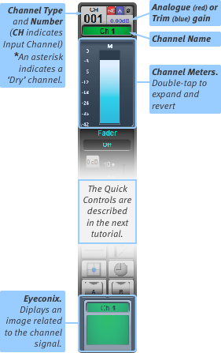
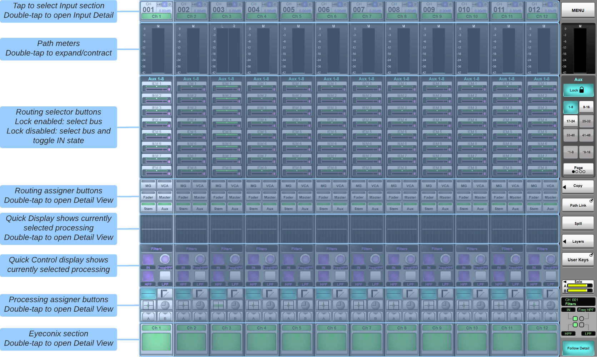
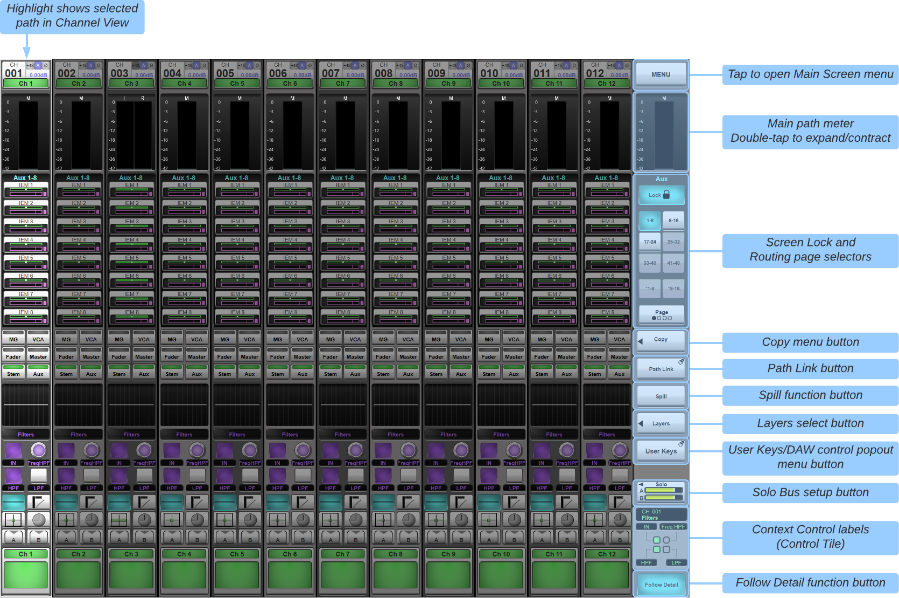
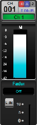
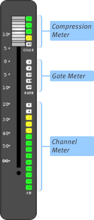
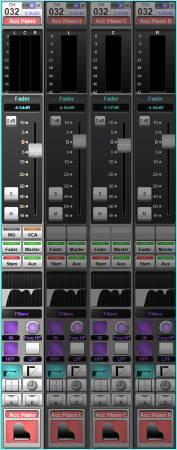
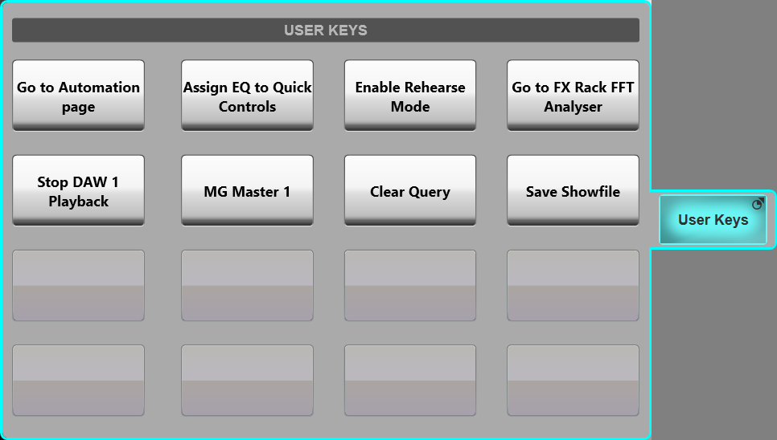

Channel View

Channel view provides visual feedback for the selected tile bank. Note: Pressing Screen on a Fader Tile will also call the channel view display to the main screen.
All path types will be shown on the screen.
The Layers button on the right of the main screen can also be used to call paths to the screen, even if those paths are not on your tiles (see previous section for details on Layers & Banks).
Touch a path on the screen to select it – the selected path is highlighted with a cyan border. This will also engage the tile's Select button.
The elements of the channel strip are shown at right and below.


Double-tap the quick display 'thumbnail' in the middle of the channel strip or coloured Eyeconix section at the bottom of the strip to open the Detail View page in that view.
Alternatively, double tap the Input section at the top of the channel strip, Routing assigner buttons or Processing assigner buttons to open the Detail View in that section and assign that function to the Quick Controls.
Channel Meters

Channel meters are shown at the top of the on-screen channel strip, and to the right of the physical fader.
By default, input channels are metered post-trim and output channels are metered post-all (including fader).

To view an expanded version of the on-screen meter, double-tap it. The meter will expand to cover the Selector area.
Note: The small meter display is a compact version of the expanded meter; the meter range is the same for both displays.Dynamics gain reduction is shown on the Fader Tile.
Meter settings can be adjusted in System Options
Spill

The Spill function allows Stereo, LCR, 4.0 and 5.1 paths to be split up into individual components, with each component 'spilled' into its own channel strip. This allows certain elements of the component signals to be configured individually.
To spill a channel, Select it in Channel View (so that it gains a cyan surround) and touch the Spill button in the right side of the Main Screen. The component channels will spill into the channel strips to the right of the 'parent' channel, covering over the channels which were in those channel strips, with the cyan surround encompassing the parent and component channels. The component channels will retain the parent channel's name, appended with L, C, R, LF, Ls or Rs.
Note: If the spilled channels cannot fit in the channel strips to the right of the 'parent' channel, they will overflow onto the channel strips in the left side of the screen.
To 'wrap' the Component Channels back up into the Parent Channel, touch Spill again. You will now recover control of the channels which were 'underneath' the Component Channels.
When spilled, you can adjust various elements individually, as follows:
Fader
Component channels function as members of a VCA, where the 'parent' channel is the VCA master.
In other words, Component output levels are affected by both the parent's fader and their own fader (which is hidden when the channel isn't spilled).
When a channel is spilled, the Component channels' faders will be at 0 dB (unity gain) by default; moving them will create gain offsets which will be retained when they are 'wrapped' back into the Parent.
Mute
Component channel Mute buttons will be available. If you activate the Parent channel's Mute button, the Component Mute buttons will go orange, indicating that they are functioning like members of a VCA, with the Parent acting as the VCA master.
See Mutes and Mute Groups for details.
Solo
Component channel Solo buttons will be available, allowing you listen to individual components. Component solo settings are remembered when the 'parent' solo function is activated and deactivated (if in Additive Solo mode).
Signal Processing
Most Component channel processing settings can be altered.
Each parameter will be offset against the 'parent' settings. In other words, if you change the frequency of an EQ band for one component, that amount of change will remain the same when that band's frequency is adjusted on the 'parent' EQ display.
Notes:Bear in mind that frequency offsets are measured logarithmically!
Some settings such as Analogue Input settings, EQ shape, Compressor/Gate Ext Key & Peak Mode, Pan and All Pass Order cannot be altered on individual component channels.
Sends
Component gains on sends to Stem and Aux buses can be adjusted individually, and differences will be retained as offsets when 'wrapped' back together. However, sends cannot be independently switched in and out on individual components. The 'parent' send level must be turned up before its Component channel levels can be adjusted.
Note: Parameters that can be offset between component channels (EQ, Filters, bus sends etc.) will change on all component channels when the parent parameter is changed. However, touching a component channel's encoder or fader while adjusting the same control on the parent channel will keep the component's parameter at its current value, i.e. changes made to the parent channel will be ignored on the component channel.
User Keys/DAW Control Popout
The Channel View sidebar includes a popout that can show either DAW Control functions or user-defined User Keys functions.

Press & hold the sidebar button (labelled either DAW or User Keys depending on the last selected option) to select the contents of the popout.

Useful Links
Detail ViewQuick Controls
Index and Glossary